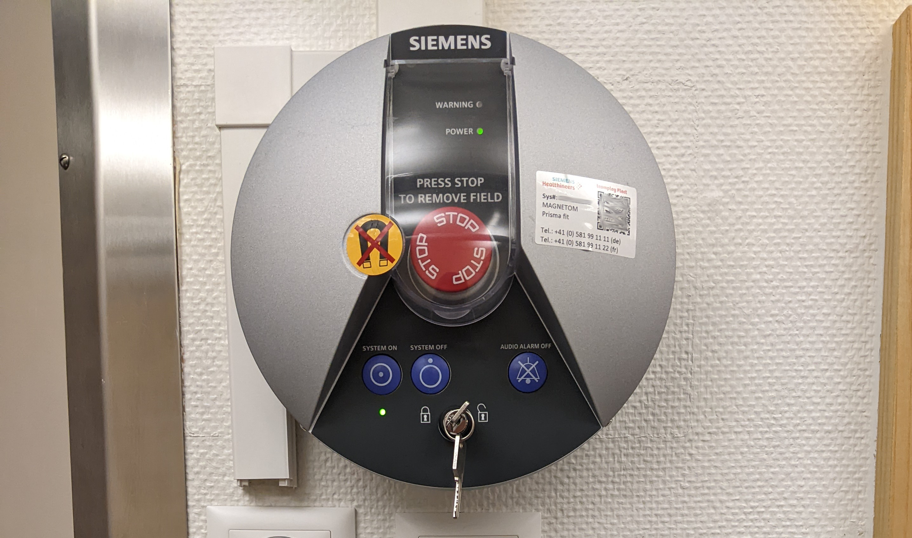

Session tear-down
Showing the participant out¶
- Extract the bed from the scanner's bore using the scanner's control wheel. The home button can be used to bring the bed out.
 |
|---|
 |
- Unplug the head coil from the bed connector and then lift the lever that releases the upper part of the coil, put it aside (e.g., inside the bore or on a chair next to the scanner).
- Release the air from the inflatable padding pushing the release valve of the pump and take them away. Remove the disposable covers and throw them away in the trash container.
- Help the participant sit down.
-
Instruct the participant to remove the earplugs and dispose of them. Ask them about the experience:
Get feedback about the session from the participant
[NAME], how was your experience? Have you been able to feel comfortable throughout the session? What advice, indication do you feel we could've provided you for a better experience?
-
Lift the nasal cannula and help the participant remove it from their head.
- Disconnect the tube from the RB and then lift the velcro attachmet to remove the RB.
- Disconnect the ECG leads
- Help the participant step down and accompany them out to the control room.
- Help the participant recover their personal belongings and change clothes if necessary.
- Solicit more feedback on participant's comfort for future sessions.
- Solicit tickets and receipts for transportation.
- Give the participant the corresponding compensation for the participation and transportation.
- Request a signed receipt of the amount of the financial compensation.
AFTER SCAN, inside the scanner room¶
-
Carefully remove the infrared mirror:
- Enter again the scanner room with the plastic container of the mirror and leave it prepared on the bed.
- Separate the mirror frame from the upper part of the head coil and lay it on the bed.
- PUT ON A NEW PAIR OF GLOVES
- Remove the scotch tape holding the infrared mirror and IMMEDIATELY insert the mirror in its plastic bag.
- Take the mirror in its bag OUT OF THE SCANNING ROOM and place it back in the fMRI box, with extreme care.
- Re-enter the scanning room and clean the standard mirror removing all residues of glue from the scotch tape. Re-attach the mirror to its coil's frame.
-
Cleaning up instrumentation:
- Take the projector's screen off and store it in its designated shelf.
- Unplug the two cables connected to the ET (signal and power). Put those extremities aside far from the scanner.
- Take the ET back outside and put it in a stable place.
- Unscrew the ET lens, while ALWAYS keeping one hand under the lens while screwing/unscrewing it and put it back into its cover.

- Put the cover, the ET base back in the fMRI box, being extremely careful to not crush the mirror.
-
Re-enter the scanning room.
- Disconnect the ECG leads from the filter of the access panel, fold the cable and leave it prepared with the RB to take out of the room with other equipment.
- Disconnect the last section of the cannula and dispose of it in the trash can.
- Take the ECG electrodes, the RB, and the plexiglas base outside to the control room.
-
With someone outside in the control room:
- Careful extract the cables (fiber and power of the ET) back through the access tube. The person outside will carefully roll them around being extremely careful, and place them in the rolling table of the ET computer.
- Extract the RB and the GA tubing from the room. Likewise, the person outside will carefully roll and store them.
-
Clean-up of the scanning room:
- Put the sheet and the blanket inside the dirty linen bag (in the trash if used plastic sheets).
- Dispose all single-use sanitary protections.
- Put the pillows back in place.
- Clean up the head coil (bottom and upper parts), and lock it back with its bottom part, do not plug the connectors.
- Remove the head coil and put it in the scanner's bore.
- Remove the back padding elements and put them back in their designated storage.
- Reinstall the spine coil.
- Plug back the head coil if you know the next exam will require that specific coil, or simply put it away with the other (head) coils on the shelf next to the scanner.
- Put the bed back in place = push the "home" button on the scanner
- Put the wooden stopper of the main access tube back on the tube.
- Everything that is removed for the experiment MUST be put back in place at the end of the experiment, i.e. position of the bed, coil, emergency button, ears padding.
- Take a glove, on the right there is some cleaning napkins. Use them to clean the bed.
- Exit and close the external door.
AFTER SCAN, outside scanner room¶
-
Switch off the projector.
-
Retrieve ET recordings (from ███):
- Insert a USB key into ███ and save the experiment from AcqKnowledge.
- Upload to a pre-designated drop-box (e.g., using Dropbox)
- Press Ctrl+Alt+Q on the ET's computer to exit the EyeLink 1000 Plus Host PC application and click on the Shutdown button from the File Manager toolbar.
- Switch off laptop and ET PC Tower. Plug back the sync box and the VGA projector where they were.
- Fix the rolled cable with the scotch on the PC Tower base.
- Turn off the pump of the GA, then switch the GA off. DO NOT PUT THE CAP IN WHILE THE PUMP IS ON.
- Remove the cables connected to the BIOPAC and the GA and store them in the boxes in their original bags.
- Take the ET, Remove (always with and hand under the lens) the MRI compatible LENS. Put it back to its contained inside the box.
- Put back the regular Lens.
- Bring back the box and the base at CIBM EEG lab. Put the keys back under old Nora's desk.
- Fix the ET with the scotch at the chariot.
- Bring back the chariot and the TMS laptop at the TMS lab
Turn off the MRI system if no more sessions are scheduled afterward¶
It is critical to follow the steps in order, ensuring each step is completed before proceeding further

- Turn off the satellite station (███, the computer on the left side of the control desk)
- Turn off the control station (███, the computer on the right side of the control desk)
- Push the blue button displaying an overdotted circle and the SYSTEM OFF label above, which is found right above the key
- Turn the key into the closed lock position ()